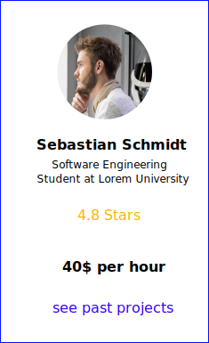
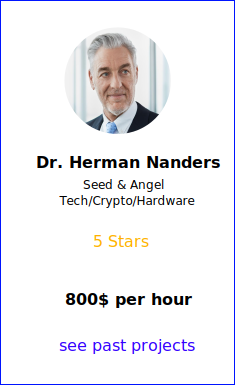

The Portal
How can we turn ideas into real ventures?
We propose a platform where we connect the three main groups of actors every Start-Up needs, to eliminate all obstacles in the process of converting a concept into a product. This democratizes the company founding process. When social contacts and access to manufacturing stops being a requirement, the quality of your idea becomes the only limit.
What are the core actors of founding a Start Up?
Idea
Expertise
Capital
Idea
Founder
Expertise
Agencies

Capital
Investors
How can we connect and help these actors?
Founders
There is little doubt that being in the right place at the right time often overrules the quality of your idea when it comes to creating products, that change the world. If thousands of life-altering ideas go to waste every day, because it’s the intellectual owner is located somewhere, somewhen without the right partner, the world misses out on hundreds of solutions every year. By automatically connecting idea crafters with the partners needed, we give people the opportunity to turn their concepts into products, regardless of their academic or social background. Engineers, Manufacturers or Investors stop being distant agents you have no access to.
Agencies
By registering for the CubeCon Portal, you can present yourself as a freelancer or a manufacturer and get automatically paired with people working in the Cubes, who need your expertise. It’s a chance for you to offer your skills as a Software Engineer, a Project or Finance Management, Lawyer, etc. We also strive to connect manufacturers in rising markets like China with western Start-Ups in the making. The system automatically analyzes your skills and matches them with the most fitting projects created in the Cubes.
Investors
Whether you have millions or hundreds of Dollars to spare – CubeCon will match you with Start-Ups in the making. No insider knowledge needed. Wherever you are in the world if you register at the portal you can browse all public projects created in the cube and participate in any project by buying stocks. If you are a high profile investor, the system matches you to promising teams and concepts, based on your investing history.